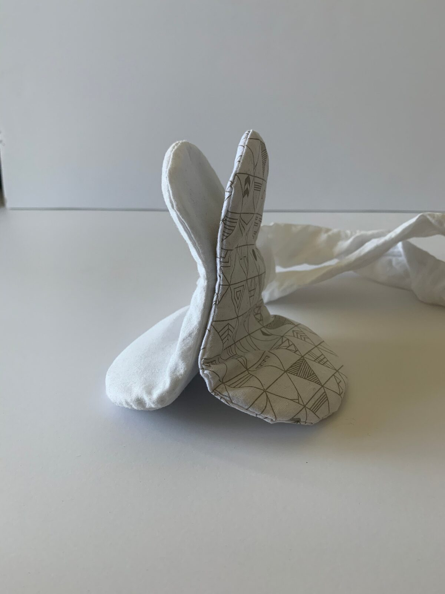
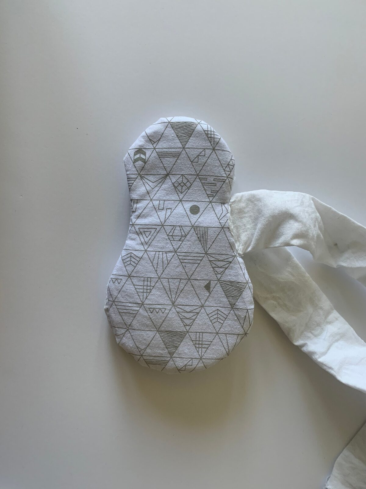
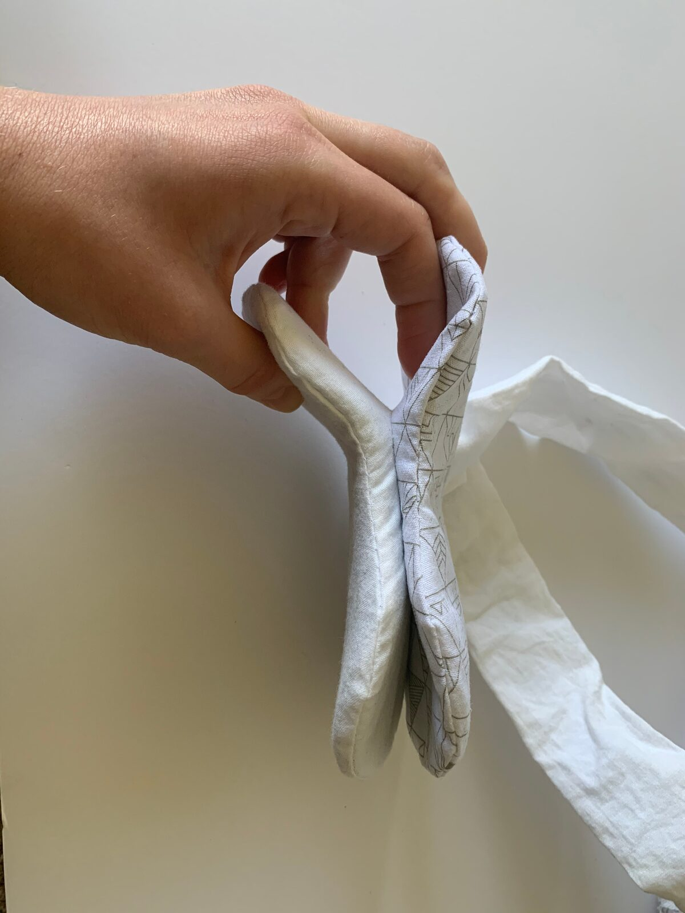
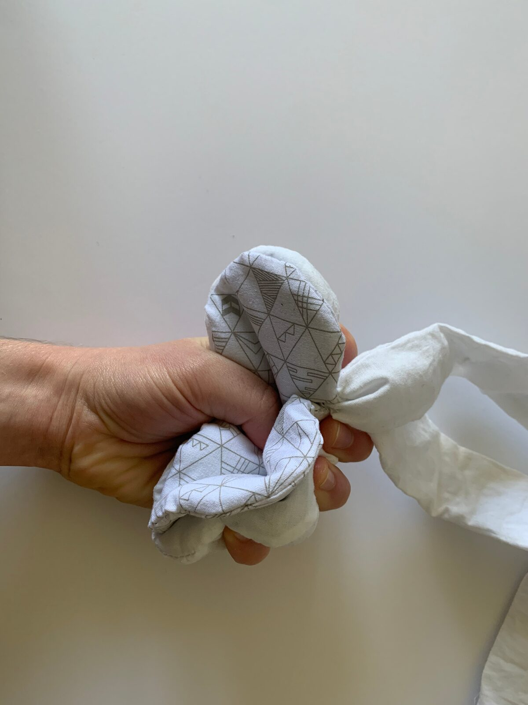
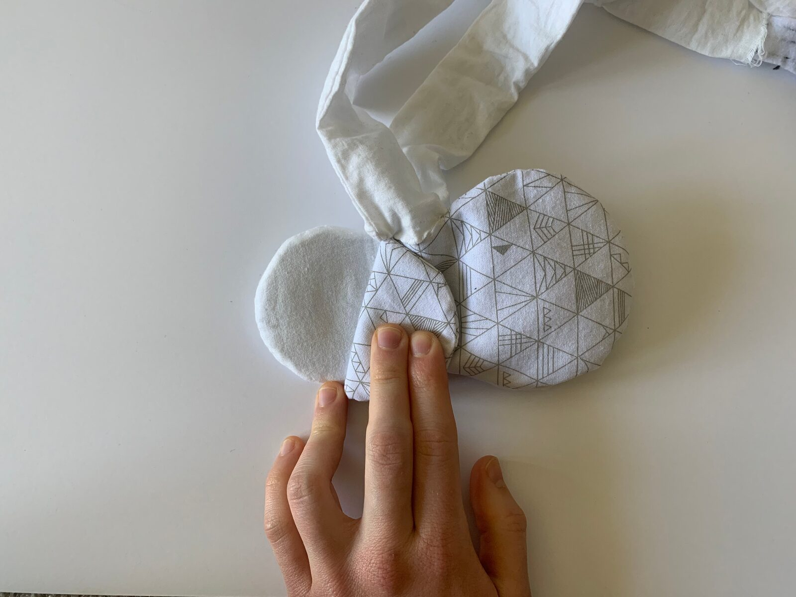

Squishy Music Toys
Squishy Music Toys
1. PubPub Link
https://nime.pubpub.org/pub/uhe31vxo/draft?access=7t2acpqe
2.ABSTRACT
Music education as it is today can be stressful or overwhelming for young people - it sets up a competitive, strict atmosphere that has driven many children away from learning an instrument. It doesn’t have to be this way. In this project we explore a possible solution to this issue, through the creation of a new kind of music interface designed to let anyone, at any age, have the experience of playing music. This interface is soft and squishy, allowing a comforting yet exciting new way to create and control music. By doing this, you also eliminate much of the detailed technique and fine motor movements that are often required when learning an instrument, thus making it more accessible to a wider range of people.
The way these interfaces - the Squishies - are designed, in unusual forms that react audibly to the users touch, they almost take on a life of their own. An instrument that makes music when you place your hand on it is somewhat reminiscent of a pet cat that purrs when you stroke it. By designing interfaces that use such intimate tactile cues, you create something that users may come to believe has a conscience - the Squishy is expressing pleasure, excitement, or possibly even discomfort in response to you. Each Squishy is embedded with sensors that respond to bending and pressure forces on the exterior shell through sound. These sensors are incredibly reactive, so even small changes to the shells can affect the sounds being created, encouraging users to concentrate on the sounds they are creating, guiding them to be more intentional with their movements. In this way, the Squishies can even act as a tool for meditation.
Each of the instruments (and the pressure sensors within them) are created from conductive fabric and thread, as well as silicone inserts that give them a tactile experience similar to that of a stress ball. They operate using a Teensy, and can be connected via MIDI to any music software. At present they are being used in combination with Max/MSP standalones, which allow users to control the tempo, volume, and pitch of pre-loaded samples with the Squishies.
3.Program Notes
Music education as it is today can be stressful or overwhelming for young people - it sets up a competitive, strict atmosphere that has driven many children away from learning an instrument. It doesn’t have to be this way. In this project we explore a possible solution to this issue, through the creation of a new kind of music interface designed to let anyone, at any age, have the experience of playing an instrument. These interfaces - the Squishies - are soft and pliable, allowing a comforting yet exciting new way to create and control music. By making instruments squishy, you also eliminate much of the detailed technique and fine motor movements that are often required when learning how to play one, thus making it more accessible to a wider range of people. The Squishies react audibly to physical touch through pressure sensors, and can be squeezed in any way without hurting the instrument.
4. Media










Squishy Music Toy Demo
5. ACKNOWLEDGEMENTS
The author would like to thank Tod Machover and the rest of the Opera of the Future group.
This work is supported by the MIT Media Lab.